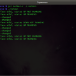
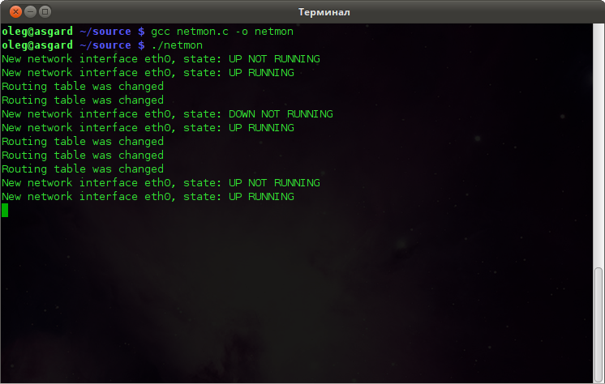

Once in my work, I needed to monitor all changes in the Linux networking subsystem: adding or deleting IP addresses, routes, etc.
Maybe the best way to do this is to use socket-based Netlink technology. Using Netlink, we can “subscribe” to some network-related notifications from the kernel. It’s also possible to send commands to the network stack and change the routing table, interface configurations, and packet filtering. For example, popular utilities like “iproute2” are also using Netlink to do their job.
The easiest way to access Netlink sockets from the userspace is to use a libnetlink library, which provides many macros, defines, and functions.
The worst part of this library and whole Netlink technology is a lack of good examples.
In this case, a good solution is using iproute2 source code to discover things you interesting in. This article is also may be used as a good startup point.
Introduction in Netlink
The Netlink is a socket-based Linux kernel interface used for inter-process communication (IPC) between both the kernel and userspace processes and between different userspace processes, in a way similar to the Unix domain sockets.
Like the Unix domain sockets, unlike INET sockets, Netlink communication cannot traverse host boundaries.
However, while the Unix domain sockets use the file system namespace, Netlink processes are addressed by process identifiers (PIDs).
Communication with Netlink is made using a separate socket’s family – AF_NETLINK.
Every Netlink message contains a header, represented with nlmsghdr structure. After the header may be attached some payload: some special structure or RAW data.
Netlink can split big messages into multiple parts. In such a case, every “partial” package is marked with NLM_F_MULTI flag, and the last package is marked with NLMSG_DONE flag.
There are a lot of useful macros that can help us to parse Netlink messages.
Everything is defined in Netlink.h and rtnetlink.h header files.
Creating of Netlink socket is pretty standard.
socket(AF_NETLINK, SOCK_RAW, NETLINK_ROUTE)
where:
AF_NETLINK — netlink domain
SOCK_RAW — raw socket
NETLINK_ROUTE — required protocol.
In particular, NETLINK_ROUTE is used for routing and link information.
All available protocols can be found in the documentation. Here is a list of the most interesting:
- NETLINK_ROUTE — routing and link information, monitoring and configuration routines
- NETLINK_FIREWALL — transfer packets to userspace from the firewall
- NETLINK_INET_DIAG — information about sockets of various protocol families
- NETLINK_NFLOG — Netfilter/iptables ULOG
- NETLINK_SELINUX — SELinux event notifications
- NETLINK_NETFILTER — communications with Netfilter subsystem
- NETLINK_KOBJECT_UEVENT — get kernel messages
- NETLINK_USERSOCK — reserved for user-defined protocols
Communication
All communications through the Netlink socket is made with two well-known structures: msghdr and iovec.
struct iovec
{
void *iov_base; // data buff
__kernel_size_t iov_len; // size of the data
};
This structure contains a link to the actual message buffer with some data and its size.
struct msghdr {
void *msg_name; // client addr (socket name)
int msg_namelen; // length of the client addr
struct iovec *msg_iov; // pointer to the iovec structure with message data
__kernel_size_t msg_iovlen; // count of the data blocks
void *msg_control; // points to a buffer for other protocol control-related messages or miscellaneous ancillary data.
__kernel_size_t msg_controllen; // length of the msg_control
unsigned msg_flags; // flags on received message
};
struct msghdr can be directly passed to socket’s recvmsg and sendmsg and used to minimize the number of directly supplied arguments.
This structure is defined in <sys/socket.h>
See recvmsg and sendmsg for details.
A Netlink message stored in iovec typically contains a Netlink message header (struct nlmsghdr) and the payload attached. The payload can consist of arbitrary data but usually contains a fixed size protocol-specific header followed by a stream of attributes.
struct nlmsghdr
{
__u32 nlmsg_len; // message size, include this header
__u16 nlmsg_type; // message type (see below)
__u16 nlmsg_flags; // message flags (see below)
__u32 nlmsg_seq; // sequence number
__u32 nlmsg_pid; // sender identifier (typically - process id)
};
The following standard message types are defined:
- NLMSG_NOOP – No operation, a message must be discarded
- NLMSG_ERROR – Error message or ACK, see Error Message respectively ACKs
- NLMSG_DONE – End of multipart sequence, see Multipart Messages
- NLMSG_OVERRUN – Overrun notification (Error)
Every netlink protocol is free to define own message types. Note that message type values
< NLMSG_MIN_TYPE (0x10)are reserved and may not be used.
The following standard flags are defined:
- NLM_F_REQUEST — Request message
- NLM_F_MULTI — Part of the multipart message
- NLM_F_ACK — Acknowledge requested
- NLM_F_ECHO — Request to echo this request; typical direction is from kernel to user
- NLM_F_ROOT — Return based on the root of the tree
- NLM_F_MATCH — Return all matching entries
- NLM_F_ATOMIC — Is obsolete now, used to request an atomic operation
- NLM_F_DUMP — Same as NLM_F_ROOT|NLM_F_MATCH
The client’s identifications (user and kernel spaces) are made with structure sockaddr_nl.
struct sockaddr_nl
{
sa_family_t nl_family; // always AF_NETLINK
unsigned short nl_pad; // typically filled with zeros
pid_t nl_pid; // client identifier (process id)
__u32 nl_groups; // mask for senders/recivers group
};
nl_pid – unique socket identifier, for the kernel sockets, this value is always zero. On the userspace, typically used current process id. This may cause problems in multithreading applications if multiple threads are trying to create and use Netlink sockets.
To work around this, we can initialize every nl_pid with this construction:
pthread_self() << 16 | getpid()
nl_groups — is a special bitmask of Netlink groups. This value is used after calling bind() on the Netlink socket to “subscribe” to specified groups’ events.
This is what we gonna use in our current task – network monitoring.
The definition of all groups can be found in the Netlink header file.
Here is some of them, which we can use in the current situation:
- RTMGRP_LINK — notifications about changes in network interface (up/down/added/removed)
- RTMGRP_IPV4_IFADDR — notifications about changes in IPv4 addresses (address was added or removed)
- RTMGRP_IPV6_IFADDR — same for IPv6
- RTMGRP_IPV4_ROUTE — notifications about changes in IPv4 routing table
- RTMGRP_IPV6_ROUTE — same for IPv6
Netlink message payload
As I already said – after the header, we can found some payload, which may be split into parts. Libnetlink contains several macros that are extremely helpful in accessing and checking message payload.
Some most useful:
- NLMSG_DATA — Get pointer to the message payload
- NLMSG_PAYLOAD — Get the actual size of the message payload
- NLMSG_ALIGN — Rounds the message size to the nearest aligned value
- NLMSG_LENGTH — Get the size of the payload and returns a correct aligned value
- NLMSG_SPACE — Get the actual size of the data in the Netlink packet
- NLMSG_NEXT — Get the next part of the multipart message. When using these macros, it’s important to check for NLMSG_DONE message flag to avoid buffer overruns.
- NLMSG_OK — Returns true if the message is correct and was successfully parsed
Practical usage of Netlink
Okay, I think that it’s enough of boring theory 🙂
Time to write some code and testing of the application.
Here is the full source code:
#include <errno.h>
#include <stdio.h>
#include <memory.h>
#include <net/if.h>
#include <arpa/inet.h>
#include <sys/socket.h>
#include <linux/rtnetlink.h>
// little helper to parsing message using netlink macroses
void parseRtattr(struct rtattr *tb[], int max, struct rtattr *rta, int len)
{
memset(tb, 0, sizeof(struct rtattr *) * (max + 1));
while (RTA_OK(rta, len)) { // while not end of the message
if (rta->rta_type <= max) {
tb[rta->rta_type] = rta; // read attr
}
rta = RTA_NEXT(rta,len); // get next attr
}
}
int main()
{
int fd = socket(AF_NETLINK, SOCK_RAW, NETLINK_ROUTE); // create netlink socket
if (fd < 0) {
printf("Failed to create netlink socket: %s\n", (char*)strerror(errno));
return 1;
}
struct sockaddr_nl local; // local addr struct
char buf[8192]; // message buffer
struct iovec iov; // message structure
iov.iov_base = buf; // set message buffer as io
iov.iov_len = sizeof(buf); // set size
memset(&local, 0, sizeof(local));
local.nl_family = AF_NETLINK; // set protocol family
local.nl_groups = RTMGRP_LINK | RTMGRP_IPV4_IFADDR | RTMGRP_IPV4_ROUTE; // set groups we interested in
local.nl_pid = getpid(); // set out id using current process id
// initialize protocol message header
struct msghdr msg;
{
msg.msg_name = &local; // local address
msg.msg_namelen = sizeof(local); // address size
msg.msg_iov = &iov; // io vector
msg.msg_iovlen = 1; // io size
}
if (bind(fd, (struct sockaddr*)&local, sizeof(local)) < 0) { // bind socket
printf("Failed to bind netlink socket: %s\n", (char*)strerror(errno));
close(fd);
return 1;
}
// read and parse all messages from the
while (1) {
ssize_t status = recvmsg(fd, &msg, MSG_DONTWAIT);
// check status
if (status < 0) {
if (errno == EINTR || errno == EAGAIN)
{
usleep(250000);
continue;
}
printf("Failed to read netlink: %s", (char*)strerror(errno));
continue;
}
if (msg.msg_namelen != sizeof(local)) { // check message length, just in case
printf("Invalid length of the sender address struct\n");
continue;
}
// message parser
struct nlmsghdr *h;
for (h = (struct nlmsghdr*)buf; status >= (ssize_t)sizeof(*h); ) { // read all messagess headers
int len = h->nlmsg_len;
int l = len - sizeof(*h);
char *ifName;
if ((l < 0) || (len > status)) {
printf("Invalid message length: %i\n", len);
continue;
}
// now we can check message type
if ((h->nlmsg_type == RTM_NEWROUTE) || (h->nlmsg_type == RTM_DELROUTE)) { // some changes in routing table
printf("Routing table was changed\n");
} else { // in other case we need to go deeper
char *ifUpp;
char *ifRunn;
struct ifinfomsg *ifi; // structure for network interface info
struct rtattr *tb[IFLA_MAX + 1];
ifi = (struct ifinfomsg*) NLMSG_DATA(h); // get information about changed network interface
parseRtattr(tb, IFLA_MAX, IFLA_RTA(ifi), h->nlmsg_len); // get attributes
if (tb[IFLA_IFNAME]) { // validation
ifName = (char*)RTA_DATA(tb[IFLA_IFNAME]); // get network interface name
}
if (ifi->ifi_flags & IFF_UP) { // get UP flag of the network interface
ifUpp = (char*)"UP";
} else {
ifUpp = (char*)"DOWN";
}
if (ifi->ifi_flags & IFF_RUNNING) { // get RUNNING flag of the network interface
ifRunn = (char*)"RUNNING";
} else {
ifRunn = (char*)"NOT RUNNING";
}
char ifAddress[256]; // network addr
struct ifaddrmsg *ifa; // structure for network interface data
struct rtattr *tba[IFA_MAX+1];
ifa = (struct ifaddrmsg*)NLMSG_DATA(h); // get data from the network interface
parseRtattr(tba, IFA_MAX, IFA_RTA(ifa), h->nlmsg_len);
if (tba[IFA_LOCAL]) {
inet_ntop(AF_INET, RTA_DATA(tba[IFA_LOCAL]), ifAddress, sizeof(ifAddress)); // get IP addr
}
switch (h->nlmsg_type) { // what is actually happenned?
case RTM_DELADDR:
printf("Interface %s: address was removed\n", ifName);
break;
case RTM_DELLINK:
printf("Network interface %s was removed\n", ifName);
break;
case RTM_NEWLINK:
printf("New network interface %s, state: %s %s\n", ifName, ifUpp, ifRunn);
break;
case RTM_NEWADDR:
printf("Interface %s: new address was assigned: %s\n", ifName, ifAddress);
break;
}
}
status -= NLMSG_ALIGN(len); // align offsets by the message length, this is important
h = (struct nlmsghdr*)((char*)h + NLMSG_ALIGN(len)); // get next message
}
usleep(250000); // sleep for a while
}
close(fd); // close socket
return 0;
}
The compilation is straightforward, nothing additional:
gcc netmon.c -o netmon
And run:
./netmon
Now you can try to play with your network interfaces – unplug and plug back of the Ethernet cable, reconnect WiFi, and so on.
You will get something like this:
It’s alive! 🙂
{kind=link}
Data processing
In this example, you can find some new structures:
struct ifinfomsg
{
unsigned char ifi_family; // interface family
unsigned short ifi_type; // device type
int ifi_index; // interface index
unsigned int ifi_flags; // device flags
unsigned int ifi_change; // reserved, currently always 0xFFFFFFFF
};
struct ifinfomsg represents a network device and contains some useful fields, like device flags and index.
struct ifaddrmsg
{
unsigned char ifa_family; // Adress type (AF_INET or AF_INET6)
unsigned char ifa_prefixlen; // Length of the network mask
unsigned char ifa_flags; // Address flags
unsigned char ifa_scope; // Address scope
int ifa_index; // Interface index, same as in struct ifinfomsg
};
struct ifaddrmsg represents the network address assigned to the device
struct rtattr
{
unsigned short rta_len; // Length of the option
unsigned short rta_type; // Type of the option
/* data */
}
struct rtattr is a helper structure used to store some parameters of the address or network link
After the successful creation of the Netlink socket, we initializing sockaddr_nl structure by setting a mask of the groups which messages we want to receive:
RTMGRP_LINK, RTMGRP_IPV4_IFADDR and RTMGRP_IPV4_ROUTE.
Also, at this point, we are allocating message structure and data buffer with a length of 8192 bytes.
After all of this, we can call bind() on a socket, subscribing to group events.
We get new messages from the socket in the infinity cycle and then parsing this message using Netlink macro.
Checking nlmsg_type field, we can detect the type of the received message. In the case of some interface/address event, we are digging deeper and getting all the interesting data.
All information is stored as an array of attributes with struct rtattr.
Using the little helper function parseRattr we can parse all attributes and extract readable information from this array.
struct ifinfomsg *ifi = (struct ifinfomsg*) NLMSG_DATA(h); // where h is netlink message header parseRtattr(tb, IFLA_MAX, IFLA_RTA(ifi), h->nlmsg_len); char* ifName = (char*)RTA_DATA(tb[IFLA_IFNAME]); // readable interface name, eth0 for example
You can check rtnetlink manual page to get more information about rtattr arrays and possible attributes indexes.
I believe that all other code in this example is pretty obvious and didn’t require detailed explanations.
But if you have some questions – please ask in the comments.
I hope this article will be helpful.
Additional materials:
Thanks for the article!
There are a few weird not documented macros directly from linux kernel – how did you figure out what they are supposed to do? Seems like the only way to work with netlink without libs like libnl is to debug and pull things from iproute2…
Hello! Yep, I spent a lot of the time trying to figure out how it supposed to work.
I digged into the kernel and iproute2 sources, debugging and experimenting.
Hello Oleg,
I would be grateful if you checked this SO question
https://stackoverflow.com/questions/55614270/how-to-asynchronously-check-if-an-ipv6-netwrok-interface-changes-state-from-tent
and if possible provided answers/ideas, etc.
Thanks in advance!!!
Hello.
Please check out my answer on the Stack Overflow.
Nice article.
Very useful to jumpstart understanding netlink sockets.
Thank you.
NLMSG_DATA(h) is first casted to ifinfomsg and then ifaddrmsg in your code. Can you explain how it works? I thought we have ifinfomsg in case of NEW_LINK,DEL_LINK and ifaddrmsg in case of NEW_ADDR and DEL_ADDR
Hello Oleg,
Another question dear Oleg:). In function parseRtattr(), “h->nlmsg_len” is passed as “len” where it is the size of whole netlink message (nlmsghdr+ifinfomsg/ifaddrmsg+rtattrs). Then, this len is checked in RTA_OK and updated in RTA_NEXT macros. I think this size should be just size of rtattrs so that RTA_OK be valid.
RTM_DELLINK event is not triggered in any case. Do you know why ? I thought it ll be triggered when I remove my cable but not
Hi Oleg,
Thanks for such an informative blogpost on netlink.
Is there any specific post related on how to access nested attribute such as IFLA_LINKINFO.